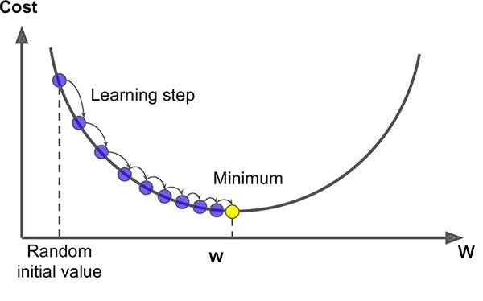
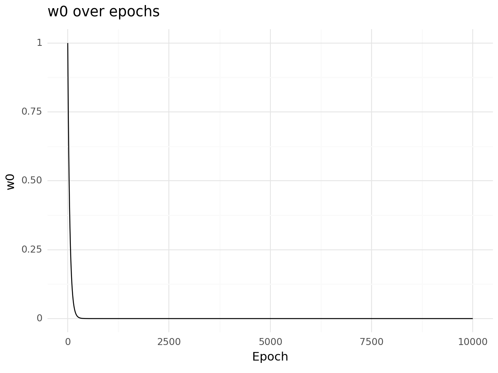

import tensorflow as tf
import numpy as npThis blog has been created out of curiosity to develop gradient descent from scratch rather than using the gradient descent algorithm directly.
This has been a good learning experience for me, and I have created it as a blog post for both my future reference and for sharing what I’ve learned


0. Loading Libraries
1. First Derivative (At one point)
1.1. First Derivate for single variable
x = tf.constant(100.0)
b = tf.constant(10.0)
with tf.GradientTape() as tape:
tape.watch(x)
y = x ** 2 + b
dy_dx = tape.gradient(y, x)
del tapeprint(dy_dx)tf.Tensor(200.0, shape=(), dtype=float32)For equation x**2 +b the first derivate at point where x=100 is 200
1.2. First Derivate with two variables
When calculating two derivative it is mandatory to define as persistent=True
x = tf.constant(20.0)
b = tf.constant(10.0)
with tf.GradientTape(persistent=True) as tape:
tape.watch(x)
tape.watch(b)
y = x ** 2 + b ** 2
dy_dx = tape.gradient(y, x)
dy_db = tape.gradient(y, b)
del tapeWARNING:tensorflow:Calling GradientTape.gradient on a persistent tape inside its context is significantly less efficient than calling it outside the context (it causes the gradient ops to be recorded on the tape, leading to increased CPU and memory usage). Only call GradientTape.gradient inside the context if you actually want to trace the gradient in order to compute higher order derivatives.
WARNING:tensorflow:Calling GradientTape.gradient on a persistent tape inside its context is significantly less efficient than calling it outside the context (it causes the gradient ops to be recorded on the tape, leading to increased CPU and memory usage). Only call GradientTape.gradient inside the context if you actually want to trace the gradient in order to compute higher order derivatives.print(dy_dx)
print(dy_db)tf.Tensor(40.0, shape=(), dtype=float32)
tf.Tensor(20.0, shape=(), dtype=float32)For equation x**2 + b**2 the first derivate at point where x=20 is 40 and where b=10 is 20
1.3. First Derivate with two variables - Simpler Code
1.3.1. Using tf.constant - No output
We when remove tape.watch(x) it is important for us to define as tf.Variable as gradient needs to be calculated iteratively at that point
x = tf.constant(20.0)
b = tf.constant(10.0)
with tf.GradientTape(persistent=True) as tape:
y = x ** 2 + b ** 2
dy_dx, dy_db = tape.gradient(y, [x, b])print(dy_dx)
print(dy_db)None
None1.3.2. Using tf.Variable - Output
Also, using simpler code we can see we can pass variables in a list
x = tf.Variable(20.0)
b = tf.Variable(10.0)
with tf.GradientTape(persistent=True) as tape:
y = x ** 2 + b ** 2
dy_dx, dy_db = tape.gradient(y, [x, b])print(dy_dx)
print(dy_db)tf.Tensor(40.0, shape=(), dtype=float32)
tf.Tensor(20.0, shape=(), dtype=float32)2. Second Derivate using one variable
2.1. Wrong indentation of code
The issue with the below is code is about code indentation when we need to calculate second derivative.
x = tf.Variable(20.0)
b = tf.Variable(10.0)
with tf.GradientTape(persistent=True) as tape2:
with tf.GradientTape(persistent=True) as tape1:
y = x ** 2 + b ** 2
dy_dx = tape1.gradient(y, x)
dy_dx_1 = tape2.gradient(dy_dx, x)print(dy_dx)
print(dy_dx_1)tf.Tensor(40.0, shape=(), dtype=float32)
None2.2. With right indentation of code
x = tf.Variable(20.0)
b = tf.Variable(10.0)
with tf.GradientTape(persistent=True) as tape2:
with tf.GradientTape(persistent=True) as tape1:
y = x ** 2 + b ** 2
dy_dx = tape1.gradient(y, x)
dy_dx_1 = tape2.gradient(dy_dx, x)print(dy_dx)
print(dy_dx_1)tf.Tensor(40.0, shape=(), dtype=float32)
tf.Tensor(2.0, shape=(), dtype=float32)For equation x**2 + b**2 the first derivate at point where x=20 is 40 and where b=10 is 20
2.3. Second Order Derivate for array of numbers
x = tf.Variable([-3,-2,-1,0,1,2,3],dtype=tf.float32)
with tf.GradientTape(persistent=True) as tape2:
with tf.GradientTape(persistent=True) as tape1:
y = tf.math.square(x)
dy_dx = tape1.gradient(y, x)
dy_dx_1 = tape2.gradient(dy_dx, x)print(dy_dx)
print(dy_dx_1)tf.Tensor([-6. -4. -2. 0. 2. 4. 6.], shape=(7,), dtype=float32)
tf.Tensor([2. 2. 2. 2. 2. 2. 2.], shape=(7,), dtype=float32)3.0 Gradient Descent Function
Here we will try to create a gradient descent function which will iterative to calculate the derivate and update the weights as per the learning rate.
def gradientdescent(learning_rate, w0):
with tf.GradientTape() as tape:
y = tf.math.square(w0)
dy_dw0 = tape.gradient(y, w0)
w0 = w0 - learning_rate * dy_dw0
return w0w0 = tf.Variable(1.0,dtype=tf.float32)Below we are running for 10k epochs to arrive at the minimal value given the function y = x^2 which is nothing but a parabola.
for i in range(10000):
w0 = tf.Variable(gradientdescent(0.01,w0).numpy(),dtype=tf.float32)w0.numpy()5.803526e-37After running for 10K epochs we can clearly observe how we have arrived at almost 0 value.
w0 = tf.Variable(1.0,dtype=tf.float32)
weights = []
for i in range(10000):
weights.append(w0.numpy())
w0 = tf.Variable(gradientdescent(0.01,w0).numpy(),dtype=tf.float32)
import pandas as pd
from plotnine import *
# Create a pandas DataFrame
df = pd.DataFrame({'epoch': range(10000), 'w0': weights})
# Plot the data using ggplot
(ggplot(df, aes(x='epoch', y='w0'))
+ geom_line()
+ labs(title='w0 over epochs', x='Epoch', y='w0')
+ theme_minimal())
As we can see clearly how we have successfully performed gradient descent for a toy example